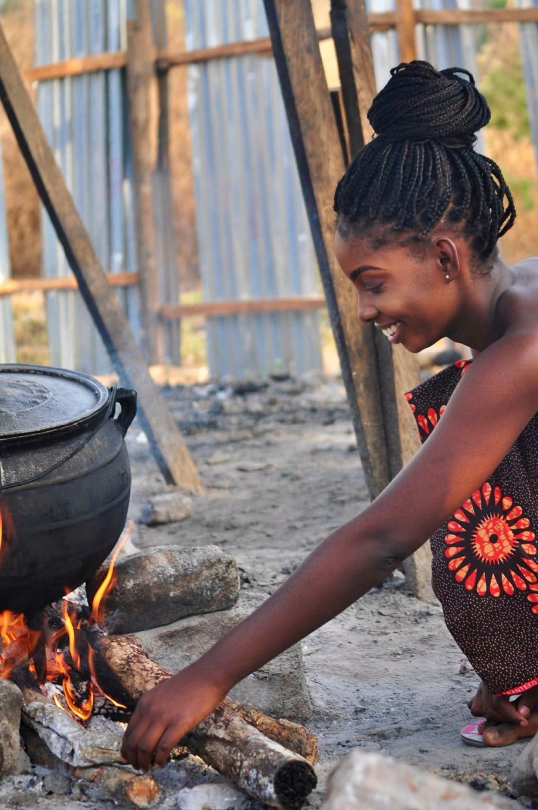
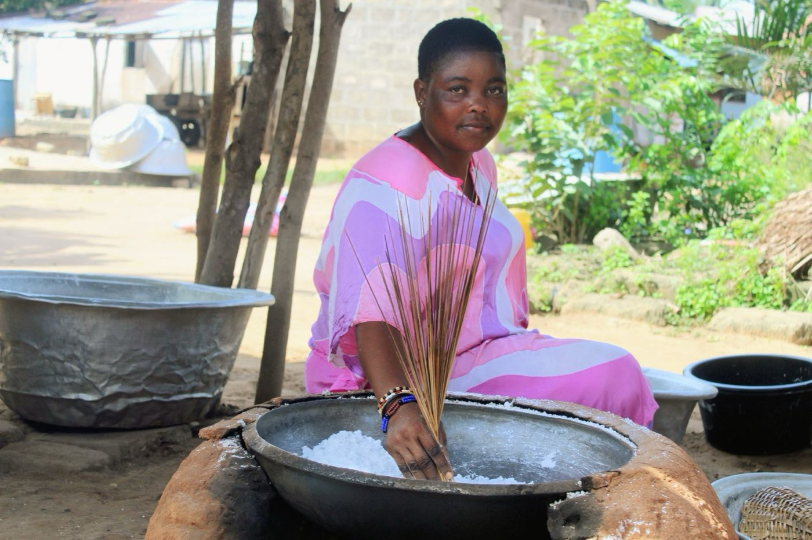

A guide for first-timers
Ghanaian food, explained
What is a swallow? Why is the waakye red? How do you eat fufu without a spoon? Everything we explain at the counter, in one place.

First things first
How to eat fufu
Fufu, banku, kenkey and TZ are “swallows”: soft doughs you eat with soup, using your hand.
- 1
Wash your hands
There is a basin and soap by the door. Everyone uses it.
- 2
Use your right hand
The left hand stays on your lap, or holds your drink.
- 3
Pinch, dip, scoop
Pinch off a small piece of fufu, press a dip into it with your thumb, and scoop up soup and meat.
- 4
Swallow, do not chew
That is why they are called swallows. Chew the meat, not the fufu.
- 5
Share the bowl
In many homes the family eats from one big bowl. You get your own here, but we will not stop you.
Around the country
Four food regions
Ghana is small, but its food changes a lot from the forest to the coast to the savannah.

Ashanti & the Akan heartland
The forest belt around Kumasi is fufu country. Cassava, plantain and cocoyam grow well here, so the food is built on pounded swallows and rich soups: light soup, palm nut soup and groundnut soup. Ampesi with kontomire is the everyday meal at home.
On our menu

Accra & the Ga coast
On the coast, corn and fish lead. Ga kenkey in corn husks, banku with grilled tilapia and fresh pepper, and fried fish with shito. Accra is also where every regional dish meets on the street, from waakye at breakfast to kelewele after dark.
On our menu

Volta & the Ewe east
Ewe cooking leans on corn doughs like akple and banku, and on okra: fetri detsi, okra soup with crab and smoked fish, is the signature. Seafood from the lagoons and the coast shows up everywhere.
On our menu

The North
Drier land means millet, sorghum, maize and groundnuts. Tuo zaafi with ayoyo or green soup is the daily meal, dawadawa seasons almost everything, and guinea fowl is the meat for special days. Waakye and chichinga both travelled south from here.
On our menu
A to Z
Words you will see on our menu
With a rough guide to saying them. Twi, Ga, Ewe and Hausa all meet on a Ghanaian menu.
A
- Abenkwan say “ah-BEN-kwahn”
- Palm nut soup. The nuts are boiled, pounded and strained to make a rich red soup, usually with goat or smoked fish.
- Akple say “AHK-pleh”
- An Ewe swallow of corn and cassava dough, softer than banku, eaten with okra soup (fetri detsi).
- Ampesi say “ahm-PEH-see”
- Boiled yam, plantain or cocoyam, served with a stew such as kontomire.
- Asaana say “ah-SAH-nah”
- A drink of fermented corn and caramelised sugar. Sweet with a sour edge.
- Asanka say “ah-SAHN-kah”
- A ridged earthenware bowl used with a wooden pestle (tapoli) to grind pepper, tomato and onion. Our name.
- Ayoyo say “ah-YOH-yoh”
- Jute leaves, cooked into a green, slightly slippery soup in the North. Eaten with tuo zaafi.
B
- Banku say “BAHN-koo”
- Fermented corn and cassava dough, cooked and stirred until smooth and firm. Pleasantly sour.
- Bofrot say “BOH-frot”
- A Ghanaian doughnut, round and fried, often flavoured with nutmeg.
- Brukina say “broo-KEE-nah”
- Steamed millet in cold sweetened milk, named after neighbouring Burkina Faso.
C
- Chichinga say “chee-CHING-gah”
- Ghanaian kebab: thin meat on sticks, rolled in groundnut and pepper spice and grilled.
D
- Dawadawa say “DAH-wah-DAH-wah”
- Fermented locust beans. Strong-smelling, deeply savoury and used in northern soups.
F
- Fufu say “FOO-foo”
- Boiled cassava and plantain (or cocoyam) pounded smooth in a mortar. Swallowed, not chewed.
G
- Gari say “GAH-ree”
- Grated, fermented and roasted cassava granules. Sprinkled on beans or soaked as a snack.
H
- Hwentia say “HWEN-tee-ah”
- Grains of Selim: long dried pods with a smoky, peppery taste, used in soups and sobolo.
J
- Jollof say “JOL-off”
- Rice cooked in a spiced tomato and pepper stew. The subject of West Africa's friendliest feud.
K
- Kanzo say “KAHN-zoh”
- The crisp, slightly burnt rice at the bottom of the pot. Prized, especially from jollof.
- Kelewele say “keh-leh-WEH-leh”
- Ripe plantain cubes spiced with ginger and chilli and fried. Accra's night snack.
- Kenkey say “KEN-kay”
- Fermented corn dough steamed in corn husks (Ga) or plantain leaves (Fante).
- Kontomire say “kon-toh-MEE-reh”
- Young cocoyam leaves, chopped and stewed with palm oil and egusi.
- Koobi say “KOO-bee”
- Salted, dried tilapia, used in small amounts to season stews.
- Kosua ne meko say “koh-SOO-ah neh MEH-koh”
- Literally "egg and pepper": boiled eggs split and filled with fresh ground pepper. A street snack.
L
- Lamugin say “LAH-moo-gin”
- A northern ginger drink with cloves and pepper.
N
- Nkate nkwan say “n-KAH-teh n-KWAHN”
- Groundnut soup. Nkate means groundnut and nkwan means soup in Twi.
O
- Omo tuo say “OH-moh TOO-oh”
- Soft-cooked rice pressed into balls, eaten with groundnut or palm nut soup.
R
- Red red say “red red”
- Black-eyed beans in red palm oil, with fried ripe plantain.
S
- Shito say “SHEE-toh”
- A black pepper sauce of dried fish, shrimp and chilli fried slowly in oil.
- Sobolo say “soh-BOH-loh”
- A chilled drink of hibiscus, ginger and pineapple.
T
- Talia say “TAH-lee-ah”
- Spaghetti, usually fried with stew. Part of a full waakye plate.
- Tatale say “tah-TAH-leh”
- Pancakes of overripe plantain, ginger and a little flour, fried in palm oil.
- Tuo zaafi say “TOO-oh ZAH-fee”
- A smooth maize swallow from the North, known everywhere as TZ.
W
- Waakye say “WAH-chay”
- Rice and beans cooked with dried sorghum leaves, which turn it deep red.
- Wele say “WEH-leh”
- Cow skin, boiled until soft and chewy. A favourite on waakye and in soups.
No words match that. Try another.